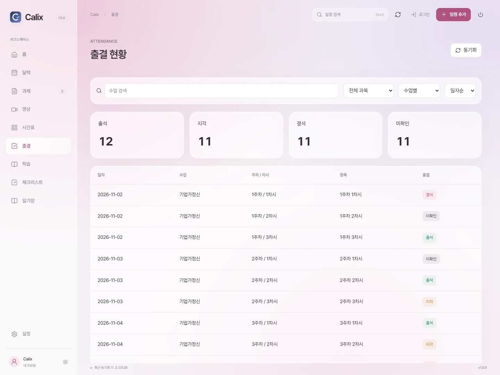
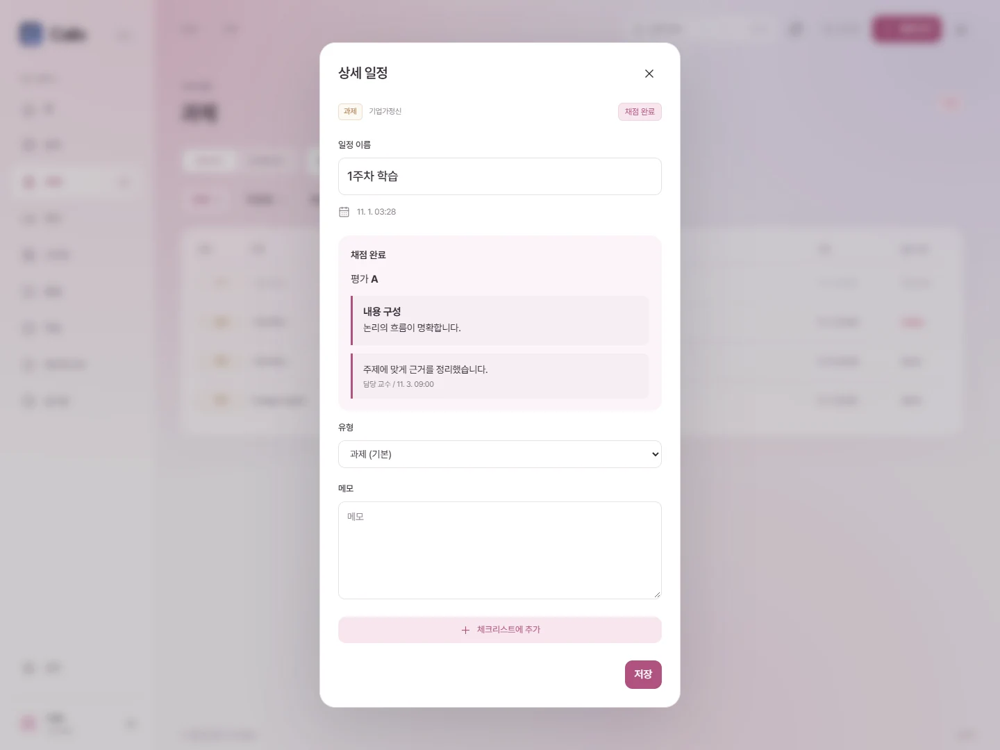
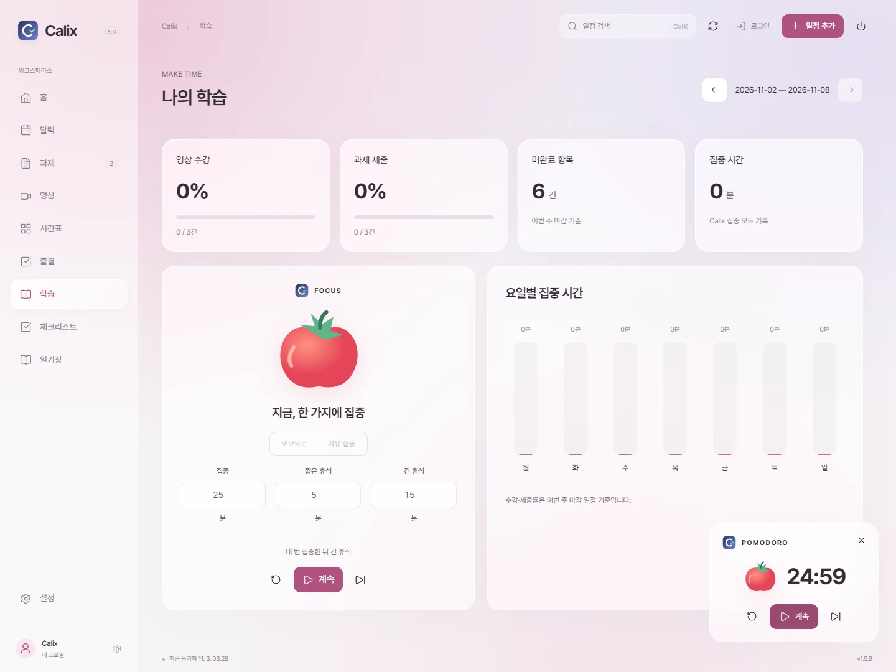
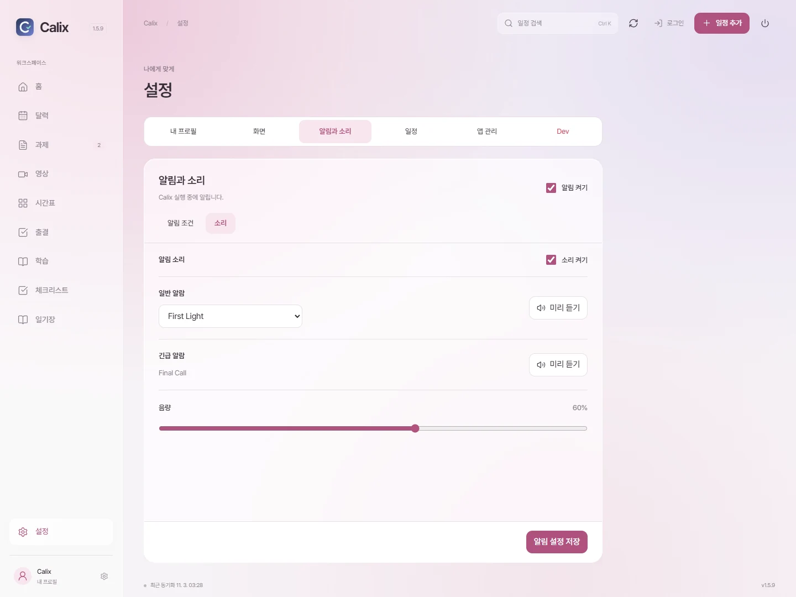

CALIX 1.5.94
사용 설명서
Windows 10 / 11, 64비트
01처음 설정

- 닉네임을 입력합니다.
- 테마를 선택합니다.
기존 설치가 있으면 데이터 유지, 데이터 초기화, 이전 버전 보관 중 하나를 선택합니다. 기본값은 데이터 유지입니다.
02로그인과 동기화

- 학교 로그인 후 로그인 완료를 누릅니다.
- 동기화로 상태를 갱신합니다. 진행 중에는 같은 버튼으로 중단합니다.
03일정 상세

- 일정을 눌러 이름, 유형, 메모를 편집합니다.
- 필요한 일정만 체크리스트에 추가합니다.
04과제와 영상

- 미완료에는 기한이 지난 항목도 포함됩니다.
- 기한 경과는 완료하지 않은 항목만 표시합니다.
- 강의별 보기로 과제와 영상을 묶어 봅니다.
- 강의 선택으로 한 강의만 표시합니다.
05체크리스트

- 여러 일정은 일괄 가져오기로 추가합니다.
- 기한, 분류, 역할, 상태를 눌러 편집합니다.
- 행 오른쪽 삭제 버튼으로 할 일을 지웁니다.
학교 일정의 완료 상태는 동기화로 확인합니다. 체크리스트 체크와 별개입니다.
06학기 설정

- 학년도를 입력합니다.
- 1학기, 2학기, 여름 또는 겨울 계절학기를 선택합니다.
학기 추가에서 다른 학기를 만듭니다. 메인 학기로 설정하면 다음에 시간표를 열 때 기본으로 표시됩니다.
07시간표

- 편집 모드에서 수업을 추가하거나 수정합니다.
- 열람 모드에서 수업을 누르면 과제와 영상을 봅니다.
- 비대면 수업은 하단 영역에 표시됩니다.
08수업 추가와 편집

- 연결 수업을 선택합니다. 학교 강의가 아니면 직접 입력을 선택합니다.
- 수업명, 교수, 색상을 수정합니다. 대면 수업은 요일과 시간도 지정합니다.
- 비대면 수업을 체크하면 시간 칸 대신 하단에 표시됩니다.
09수업 시간 추가

- 시간 추가로 같은 수업의 요일과 시간을 더 지정합니다.
- 저장하면 입력한 시간을 함께 반영합니다.
10수업 일정 열람

- 미완료, 전체, 완료를 선택합니다.
- 과제나 영상을 누르면 상세 일정이 열립니다.
11일기

- 비밀 일기는 암호로 잠급니다. 암호 분실 시 복구할 수 없습니다.
- 본문을 선택해 글자 서식을 지정합니다.
- 작성한 내용을 저장합니다.
12사용자 프로필

- 사진 선택에서 프로필 사진을 지정합니다.
- 닉네임을 변경합니다.
- 홈 문구의 {닉네임}은 실제 닉네임으로 표시됩니다.
13마감 알림

- 실행할 때마다 켜기를 선택합니다.
- 동기화 완료 시에도 알림을 표시할 수 있습니다.
- 긴급 REMIND는 분 단위로 설정합니다.
- 일반 REMIND는 일 단위로 설정합니다.
설정 → 알림과 소리에서 알림 조건과 소리를 각각 설정합니다. 직접 입력을 선택하면 숫자를 입력할 수 있습니다. 완료했거나 기한이 지난 일정은 제외합니다. Calix 실행 중에 알립니다. 알림 켜기를 해제하면 모든 알림을 끕니다.
14알람 소리

- 소리 탭에서 일반 알람 음원을 선택합니다.
- 긴급 알람 미리 듣기로 Final Call을 재생합니다.
15DB 초기화

- 모든 계정의 앱 자료와 로그인 정보를 삭제합니다.
- 별도로 내보낸 백업 파일은 유지됩니다.
16업데이트와 백업

- 새 버전을 확인하고 설치합니다.
- 개인 자료를 백업 파일로 저장합니다.
- 백업으로 복원합니다. 현재 자료는 복원 전 자동 백업됩니다.
17출결 현황

- 과목을 선택합니다. 전체 과목도 함께 볼 수 있습니다.
- 수업별 또는 영상 / 활동별로 전환합니다.
- 일자순, 주차순, 차시순으로 정렬합니다.
- 출석, 지각, 결석, 출석 인정을 확인합니다. 미확인은 결석으로 처리하지 않습니다.
학교에 등록된 출결을 조회합니다. 일부 조회 실패 시 이전 결과가 표시됩니다.
18제출 상태와 평가

- 과제 목록에서 미제출, 제출 완료, 지각 제출, 채점 완료를 구분합니다.
- 과제를 열면 평가 항목에 연결된 의견을 확인할 수 있습니다.
- 제출 코멘트는 작성자와 날짜를 함께 표시합니다.
코멘트는 제출 완료된 과제에 표시됩니다. 지각 시청은 학교가 제공한 상태를 따릅니다.
19집중 모드와 학습 통계

- 주간 영상 수강률, 과제 제출률, 미완료 항목 수와 집중 시간을 확인합니다.
- 뽀모도로 또는 자유 집중을 선택합니다.
- 집중과 휴식 시간을 설정한 뒤 시작합니다. 네 번 집중한 뒤 긴 휴식을 사용합니다.
- 우측 하단 타이머에서 일시정지, 계속, 다음 세션, 초기화를 선택합니다. 메뉴를 옮겨도 유지됩니다.
수강률과 제출률은 해당 주 마감 일정 기준입니다. 집중 시간은 Calix 집중 모드에서 기록한 시간입니다.
20동기화 알림

- 설정 → 알림과 소리 → 소리에서 소리를 켜거나 끕니다.
- 일반 알람 목록은 마감 알림에 사용할 음원입니다.
- 음량을 조절한 뒤 알림 설정 저장을 누릅니다.
동기화 완료→알림음→약 2초→마감 알림
마감 알림은 설정한 조건에 맞는 과제와 영상이 있을 때 표시됩니다.
설치 파일은 Calix 1.5.94입니다. 데이터 초기화는 삭제 경고에서 확인한 뒤 진행됩니다.